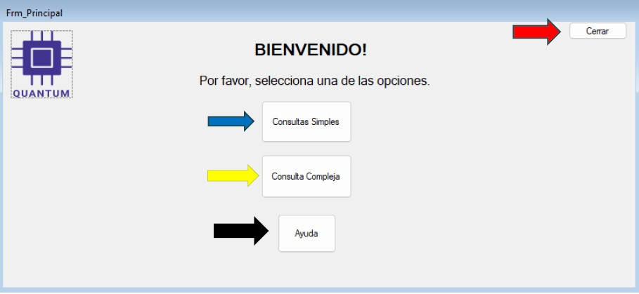

Componente de Consultas
Este manual tiene como objetivo orientar al usuario en el uso del Sistema de Consultas SQL, el cual permite realizar consultas simples y compuestas de manera rápida y segura.
El sistema facilita la obtención de información sin necesidad de conocimientos avanzados en SQL, y a la vez ofrece la opción de crear consultas personalizadas. Además, incluye validaciones que notifican al usuario cuando una consulta está mal escrita o cuando se intenta acceder a una tabla inexistente, garantizando así un manejo correcto de la información.
En el contexto de la gestión de información, las consultas a bases de datos son fundamentales para obtener datos de manera rápida y precisa. Sin embargo, para usuarios que no dominan el lenguaje SQL, construir consultas puede resultar complejo.
El sistema de Módulo de Consultas SQL surge como una solución práctica que permite a los usuarios crear, ejecutar, editar y eliminar consultas de forma intuitiva mediante una interfaz gráfica. Este módulo combina la flexibilidad del lenguaje SQL con una interfaz sencilla que facilita tanto consultas simples como consultas más avanzadas con condiciones, uniones y ordenamientos.
Este sistema se integra dentro de un entorno académico/práctico, buscando demostrar la aplicación de herramientas de programación, diseño de interfaces y administración de bases de datos para resolver necesidades reales de interacción con la información.
Descripción: Pantalla de bienvenida. Desde aquí el usuario elige el tipo de consulta que quiere realizar o accede a la ayuda del sistema.
Este módulo permite al usuario crear y ejecutar consultas básicas a la base de datos.
Este módulo permite al usuario crear y ejecutar consultas avanzadas a la base de datos.
Cuando el usuario escribe una sentencia en la Consola de SQL (Consulta Compleja) y esta contiene errores de sintaxis o comandos inválidos, el sistema:
Detecta el error de la ejecución.
Muestra un mensaje claro de advertencia indicando que la consulta está mal construida.
No ejecuta la consulta hasta que el usuario la corrija.
Ejemplo: si se escribe SELEC * FROM clientes en lugar de SELECT * FROM clientes, el sistema notificará que hay un error en la instrucción.
En los apartados de Consultas Simples y Consultas Compuestas, cuando el usuario intenta buscar o ejecutar una consulta sobre una tabla que no existe en la base de datos:
El sistema valida la existencia de la tabla antes de continuar.
Si la tabla no existe, muestra un mensaje de error informativo (ej. “La tabla seleccionada no existe en la base de datos”).
No se ejecuta la consulta para evitar resultados vacíos o caídas del sistema.
| Nombre | Teléfono | Correo |
|---|---|---|
| Richard Anthony De León Milian | 4949-8131 | rdeleonm15@miumg.edu.gt |